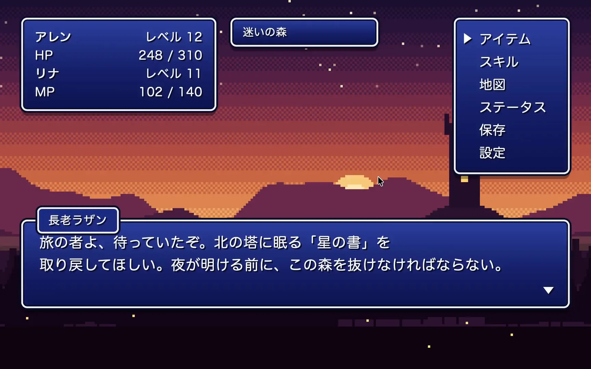
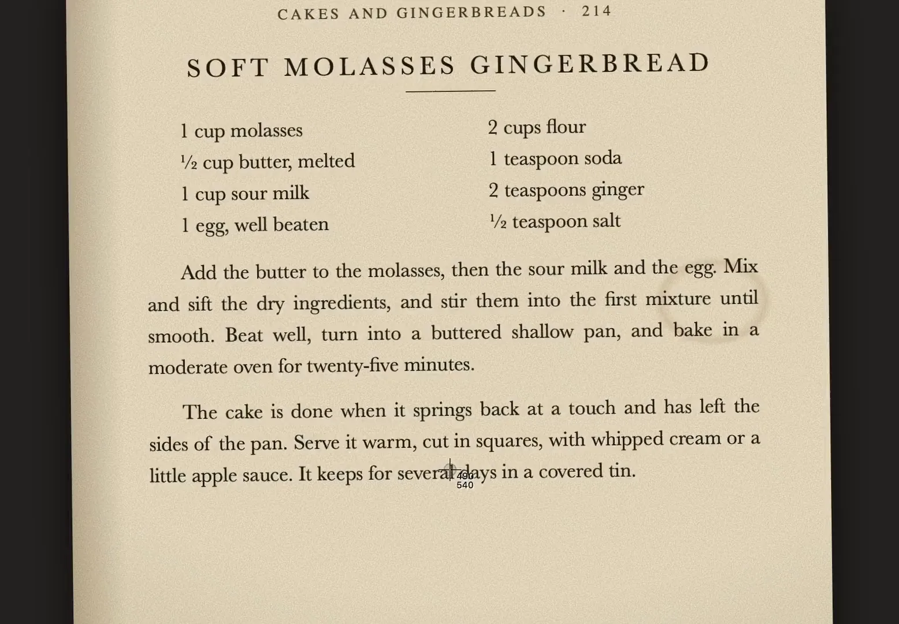
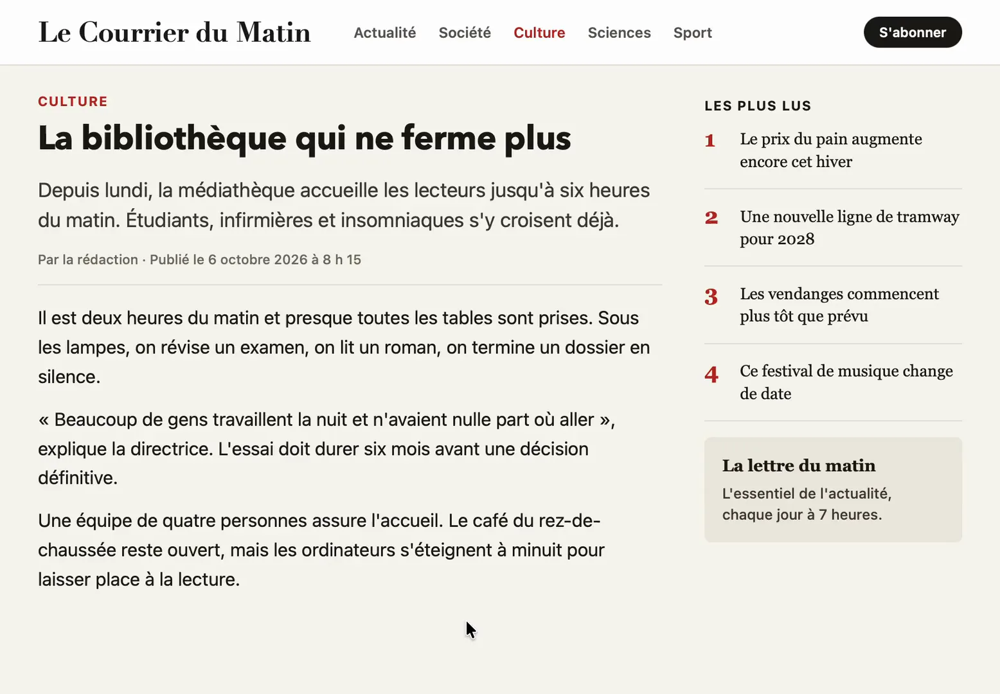
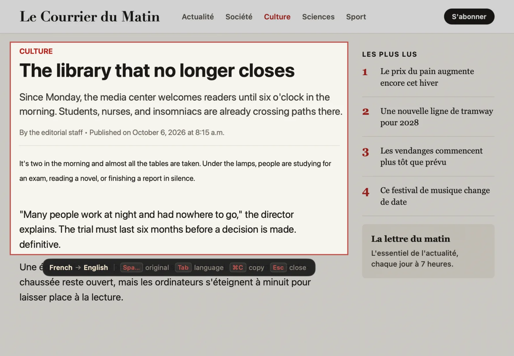
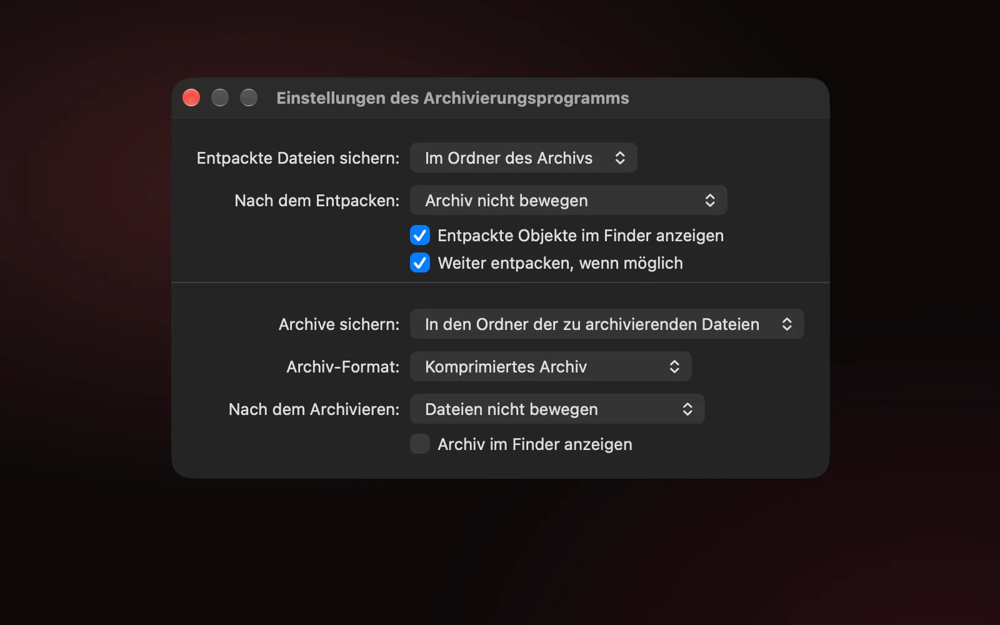
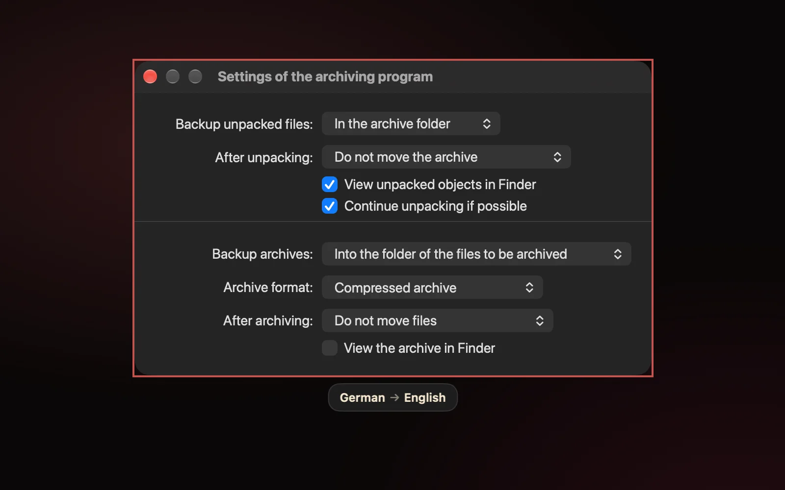

A lot of the text on your screen can't be selected.
- Game menus.
- Scanned PDFs.
- Video subtitles.
- Text inside images.
- Every app in a language you don't read.
- Lector reads any of it.
⌘⇧2 copies it.
It opens macOS's own ⌘⇧4 crosshair. Drag a box, or press Space and click a window. The words light up, so you drag across the ones you want and press ⌘C. Lines that wrap come out as one paragraph.

Or press ⌘ ⇧ 1


⌘⇧1 paints the translation over the page.
Each paragraph is rewritten in place, at the size and weight of the original. Copy from it like any other text.
The translation sits where the text was.
It works the same in a native window as on a web page: each paragraph is covered in its own background colour and rewritten in a matching text colour.


Headings stay headings
Text of the same size comes out the same size, bold stays bold, and headings stay above the body text.
Buttons stay buttons
Labels are centred on their buttons, and neighbouring text is translated together, so "Save" comes out as the button and not the verb "rescue".
Right-to-left reads right
Into Hebrew or Arabic, a column of text keeps one shared right edge.
Some things are left alone
Times, prices, keyboard shortcuts, code and web addresses stay as they are, and so does text already in your language.
A language per paragraph
Each paragraph is translated from its own language, so a chat in three languages comes out as three translations.
Wrong guess? Press Tab
Lector tries the next likely language and remembers your choice for that app, so a Japanese game stays Japanese next time.
Reads the script that's there.
A page that mixes scripts is read line by line in each one, so Japanese next to English, or Hebrew next to Arabic, comes out whole.
日本語中文한국어РусскийУкраїнськаΕλληνικάעבריתالعربيةفارسیاردوहिन्दीবাংলাதமிழ்ไทยខ្មែរქართულიՀայերենአማርኛTiếng ViệtEspañolDeutschFrançais
Latin, Cyrillic, Chinese, Japanese, Korean and the rest of Vision's set, including short labels such as menu items.
The scripts Vision can't read: Hebrew with or without vowel points, Arabic, Persian, Urdu, the Indic scripts, Greek, Georgian, Armenian, Thai, Khmer and Ethiopic. Serbian is told apart from Russian, and Persian from Arabic, by their own letters.
Apple's on-device Translation gives the best result at about a second per sentence. An offline Opus-MT pack drafts a full screen in about half a second, and Apple's translation replaces the draft as it arrives.
100 to 250 MB each. Lector downloads one only for a language Apple's Translation doesn't cover, or for every language if you turn on instant drafts in Settings.
Pay once for what you use.
Every plan reads and translates the same languages. Counts start over on the first of each month, and paid plans are one-time purchases with updates included.
Translate
$15once
Your text never leaves the Mac.
Reading and translating both happen on your Mac. There are no analytics.
Lector captures the screen only when you press one of its shortcuts, using macOS's screenshot tool. The capture goes to a private temporary file that Lector reads and deletes straight away.
Live translation watches only the area you drew, only until you stop it, and saves nothing.
Lector stores its settings, your license key and this month's counts. It never stores the text.
Language packs come from Hugging Face. A license key is checked with Gumroad when you enter it and at each launch, and keeps working for 30 days offline. If you allow it, Lector asks GitHub once a day whether there's an update.
Questions
Which Macs does it run on?
macOS 15 or later, on Apple Silicon or Intel.
Why does it ask for Screen Recording?
Reading text off the screen needs it. Lector asks the first time it runs, and macOS needs the app relaunched after you allow it. Lector doesn't need Accessibility.
What counts as a grab or a translation?
A grab counts once text is found, and a translation counts when it starts. At a limit, the shortcut opens the License window instead of the crosshair. A capture already under way always finishes.
I have Text. Can I upgrade to Translate?
Yes. The upgrade is $6, and you keep your Text key.
How do I enter my license, or move it to another Mac?
Paste the key from your Gumroad receipt into Settings › License. For an upgrade, enter the Text key first, then the upgrade key. To move a license, remove it there and enter it on the other Mac.
What doesn't it read well?
Handwriting and vertical Japanese, and heavily stylised game fonts sometimes. Offline translation between two languages that aren't English goes through English, which loses some nuance.
How does it update?
From the second launch Lector asks whether to check for updates, then installs them in the background. Settings › General can turn that off or check now.